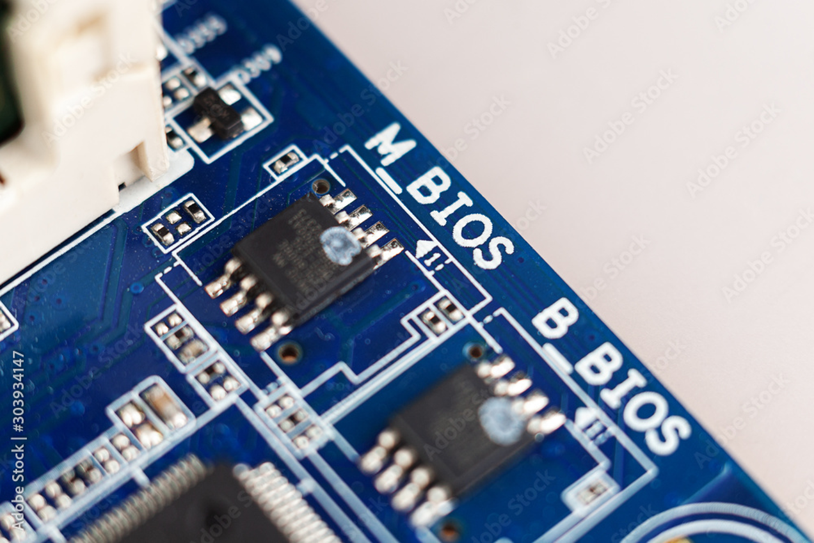

BIOS, CMOS, UEFI
Basic Input/Output services (computer firmware)
BIOS 🔧
Have you ever wondered how simply pressing the power button makes a whole computer come to life? The ON/OFF button only supplies electricity to the motherboard — but what actually triggers the operating system to load into memory is a special built-in program called the BIOS.
The BIOS (Basic Input/Output System) is embedded program on the motherboard that initializes the computer’s input and output devices during startup. The motherboard is often referred to as the firmware of the motherboard.
{kind=link}
BIOS Chip
The BIOS is burnt onto a read only memory chip built-into the motherboard: 
Read Only Memory (ROM)
ROM chips contain instructions that are directly accessed by the CPU, for example booting the computer and loading the operating system. Those chips retain their content even when the computer is powered off. Over time the ROM chips have evolved from purely ROM which can never be earased or over-written to EEPROM which are now electronically earasable and programmable. The information written on EEPROM can be rewritten without having to remove the actual chip from the computer.
Power-on-Self Test
When the motherboard receives power, the BIOS loads from its dedicated chip into memory and immediately performs a diagnostic procedure called the Power-On Self-Test (POST). The order of hardware devices checked during the BIOS is typically from the most important components (CPU, RAM, CPU fan, graphics card) to the less essential peripherals (mouse, keyboard).
This special test is called POST or Power-On-Self Test and will be helpful in troubleshooting any problem. The post test uses a combination of lights and sounds codes to indicate issues. Typically a black screen (BIOS) with error messages will be insicated.
{kind=link}
{kind=link}
Boot order
After running the POST, the BIOS will search for the boot device, i.e. the storage device containing the operating system. For that, the BIOS will check for a special software called the “boot loader” which loads the operating system into memory. To find this software, the BIOS will go through the boot order starting from the first device in the order (often the permanent storage devices (SSD or HDD)), then through the secondary and tertiary devices (ex: CD-ROM drives, and/or removable disks) until it finds a bootable device.
Changing the boot order
When installing a new operating system or using a data recovery tool, the boot order might need to be alterned.
- Turn ON or restart the computer
- During POST, open the BIOS setup utility by pressing the F2, F10 or F12 key (Dell and Hp) and sometimes F1.
- Once in the BIOS setup utility, use the arrow keys to navigate through the menu.
The BIOS appearance might be different from one manufacturer to another. For example, you may have a horizontal bar at the top of the screen as such:
:max_bytes(150000):strip_icc():format(webp)/phoenixbios-setup-main-screen-59959547c41244001039e3b1.PNG)
- Follow the BIOS’s navigation instructions, locate the boot order option.
:max_bytes(150000):strip_icc():format(webp)/boot-options-hard-drive-first-59959648054ad900119c6714.PNG)
Following the BIOS’s instructions, modify the boot order so that the boot device you wish to use is at the top.
Confirm the changes, this may re-start the computer.
Once the computer restarts, it’ll attempt to boot from the first device specified in the order. If it cannot boot, it’ll try the next device in the list.
Source: Mastering BIOS: How to Change the Boot Order By Time Fisher. July 18, 2025. LifeWire
Other System Setup options
Altough the BIOS is stored on a Read-only Programmable memory chip, some of its settings are changeable and will be stored on the CMOS chip. Here are a few settings that are changeable:
🕒 System Date/Time Sets the system’s date and time.
💾 Boot Sequence Defines the order in which the BIOS attempts to load the operating system.
🔌 Plug and Play Allows automatic detection of connected hardware devices.
⌨️ Mouse / Keyboard Enables Num Lock, auto-detect the mouse, and adjust input settings.
💽 Drive Configuration Configures storage devices such as hard drives, CD-ROMs, and floppy drives.
🔐 Security Sets or changes passwords to restrict access to the computer.
⚡ Power Management Enables or disables power-saving features and adjust standby or suspend timers.
CMOS 💾
After the computer is turn off, certain settings such as: the Date and time,hardware settings need to be saved. In addition to those, the custom settings of the BIOS, for example the Boot order must be saved as well, an updated hardware device. These settings, called system setup, are stored on another chip on the motherboard called CMOS (complementary metal-oxide semiconductor).
{kind=link}
The CMOS is made of silicon germanium and is powered by a coin-sized CR2032 cell battery, referred to as the CMOS battery. Most CMOS batteries will last the lifetime of a motherboard (up to 10 yearsin most cases), altough it sometimes needs to be replaced.
Signs of a dead or dying CMOS battery are: - Incorrect or slow system date and time. - Loss of BIOS settings. - Corresponding Error code during POST.
UEFI 🚀
For decades, the BIOS remained the hallmark of the computer booting despite the fast improvements of the computers, it did not. Intel developed the Extensible Frameworkd Interface (EFI) - an open system of standards for developing computer firmware. The UEFI is the evolution of the BIOS. It boots faster, and offers more secure boot. It was developed by Intel. Let’s have a deeper look on how the UEFI improves on the limitations of the BIOS.
BIOS versus UEFI
Limitations of BIOS ⚙️  * 🏭 Manufacturer-specific: Each motherboard manufacturer had to create its own custom BIOS, tailored to specific hardware components.
* 🏭 Manufacturer-specific: Each motherboard manufacturer had to create its own custom BIOS, tailored to specific hardware components.
💾 Limited memory space: BIOS runs in 16-bit processor mode and has only 1 MB of space to operate.
🐢 Slow initialization: It struggles to initialize multiple hardware devices simultaneously, resulting in slower boot times on modern computers.
🚫 Storage limit: Can only boot from drives up to 2.1 TB in size.
⌨️ Keyboard-only support: BIOS can only recognize keyboard input (no mouse support).
🚀 Advantages of UEFI 
🌍 Standardized and universal: Follows the EFI standard and is independant on the architecture of the computer.
⚡ 64-bit mode & more memory: UEFI can run in 32 or 64-bit mode and is not limited in allocated memory.
⚙️ Parallel hardware initialization: It can initialize multiple hardware devices simultaneously, resulting in much faster boot times.
💽 Supports Large Drives: UEFI can boot from drives larger than 2 TB, thanks to the GPT (GUID Partition Table) format.
🖱️ Mouse and GUI Support: UEFI includes a user-friendly graphical user interface with both mouse and keyboard support,colors and even animation, making setup and navigation more user-friendly.
🛡️ Secure Boot Protection UEFI also includes a built-in feature called Secure Boot, which prevents digitally unsigned drivers from loading. This helps protect against malicious software such as rootkits.